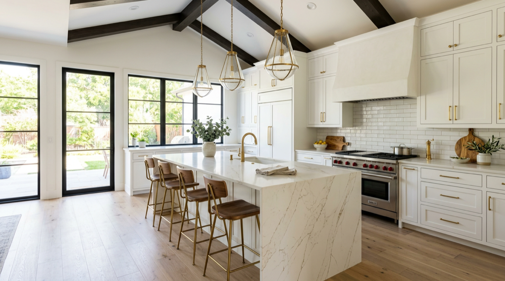

Kitchen Remodeling Across Dallas-Fort Worth
Custom cabinetry, quartz islands, layout changes, lighting, and the in-house crew who can pull it all off without subcontractor chaos.
Talk to any DFW realtor and they'll tell you the same thing: a well-done kitchen remodel returns more on resale than almost any other renovation. But "well-done" is doing a lot of work in that sentence. A bad kitchen remodel can sit half-finished for six months, blow past budget, and leave you with crooked cabinets and a tile pattern that doesn't quite line up at the seam.
OnPoint Pros has been remodeling DFW kitchens for over a decade. Frisco, Plano, McKinney, Fort Worth, Southlake — same crew, same standards, same project lead from estimate to walkthrough. We don't subcontract the chaos and we don't disappear after demo day.
If you're already collecting Pinterest boards, you're closer to a real quote than you think. Call us and we'll come measure.
Every DFW kitchen project we run, in one place.
Plywood-box construction, soft-close drawers, full-extension hardware. Painted, stained, two-tone, or natural wood.
Oversized islands with seating, storage, prep sinks, and waterfall edges. The centerpiece of a modern DFW kitchen.
Open up the wall to the living room, move the sink, relocate the range. We handle structural review, beams, and permits.
Subway, herringbone, large-format slabs, zellige. Cut to the receptacles, not around them.
Recessed cans, pendant lighting, under-cabinet LED, and properly placed switches and outlets.
Built-in refrigerators, panel-ready dishwashers, gas range hookups, vent hoods, and beverage centers.
Our most-requested style: white shaker cabinets, oversized quartz island, brass pendants, white oak floors, and a backsplash that runs to the ceiling. See examples on our featured Frisco kitchen page.
See Featured Kitchens →A full kitchen remodel in DFW typically runs 4 to 8 weeks depending on cabinet lead times, layout changes, and material selection. Cosmetic refreshes can be done in 2 to 3 weeks.
No — once demo starts, the kitchen is offline. Most clients set up a temporary kitchenette in the dining or laundry room with a microwave, mini-fridge, and coffee setup. We help plan that on day one.
Yes. We handle plumbing reroutes, gas line moves, and electrical relocations in-house. Layout changes are some of our most requested kitchen projects.
Usually not for a same-footprint remodel. For wall removal involving load-bearing walls, we bring in a structural engineer to spec the beam — included in our quote.
Yes — written workmanship warranty on every kitchen remodel. Manufacturer warranties on cabinets, countertops, and appliances are passed through.
On-site visit. Written line-item quote. No high-pressure sales.
Call (469) 238-1719